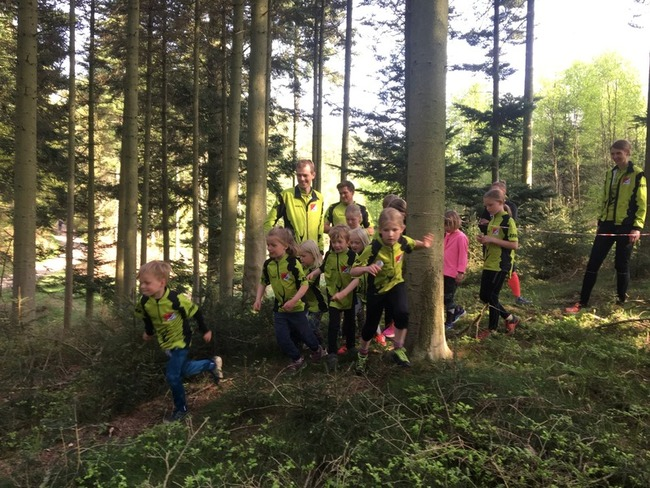
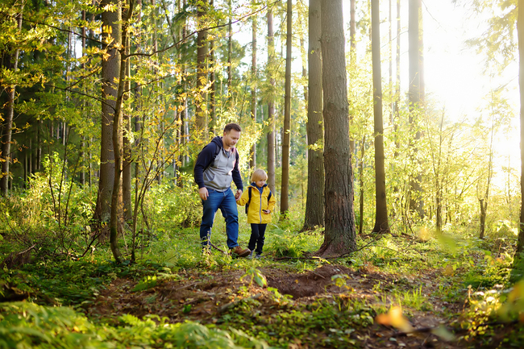

Børne- og ungdomstræningen
Børne- og ungdomstræning er selvfølgelig for alle aldersgrupper. De helt små skovtrolde, der gennem leg og lidt læring stifter bekendtskab med sporten og de lidt ældre og juniorer, der lægger vægt på både fysiske og tekniske udfordringer.
Tøv ikke med at møde op og giv jer tilkende, hvis I har lyst til at prøve orienteringsløb. Dem der laver ugens træningsløb står klar, hvis I har brug for lidt hjælp og vejledning til at komme godt i gang.
Det er selvfølgelig gratis at prøve de første mange gange - fordi vi ved, at de fleste bliver så optaget af denne herlige sport for hele familien, at mange efterfølgende melder sig ind i orienteringsklubben.


O-løb for børn, program og træning
Hver tirsdag kl.16:45 er der ungdomstræning. Her samles en stor flok børn og unge til motiverende træning sammen med de voksne og juniorløbere fra klubben, der har påtaget sig træningen.
Træningsaftenen giver altid plads til leg, sammenhold og hygge. Samtidig indeholder den som oftest et kort teoretisk oplæg, om hvad dagens orienteringstekniske træning går ud på, hvorefter der er praktiske øvelser i skoven, hvor man træner det at blive bedre tihl at orientere, at læse kortet og at planlægge sit vejvalg.
Alt sammen noget der gør det både sjovere og mere udfordrende at løbe orienteringsløb.
O-løb for hele familien
Samtidigt fungerer den ugentlige børne- og ungdomstræning også som en træningsaften for voksne, som altid er velkommen til at løbe en bane og træne dagens teknik. Også voksne kan jo lære noget og blive bedre til at orientere!
O-løb er en familiesport. Forstået på den måde at alle kan deltage på det niveau, man selv er på, som barn eller voksen, individuelt eller sammen med andre. Her er den åbenlyse fordel, at alle i familien ”går til det samme”, og alle får oplevelser afpasset efter alder, lyst og behov.
Det åbner op for fælles oplevelser, mens børnene er små og en mere individuel tilgang til en tur i skoven, når det gælder teenagere, voksne eller seniorer. I RSOK møder du alle aldre, fordi fællesskabet netop er, at vi kan lide at komme en tur i skoven og finde posterne ved hjælp af kort og kompas.
